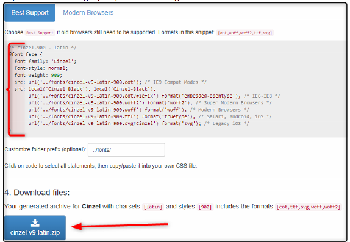

- Inicio
- 1. Estructura Básica
- 2. Meta UTF-8
- 3. Párrafos y Encabezados
- 4. Lorem -Texto de Relleno
- 5. Link a CSS
- 6. Clases
- 7. Selectores
Font - Family
Desde el archivo styles.css podemos especificar el tipo de fuente que deseamos utilizar.
Dos cosas a tener en cuenta:
- El orden en que se especifican las fuentes le indica al navegador que fuente usar. Es decir, Si la primera fuente no se encuentra, el navegador utilizara la segunda y si no, finalmente la tercera, la cual se recomienda que sea genérica.
Encontramos dos tipos de nombres de familias de fuentes:
- Family-name:times, courier, arial, etc.
- Generic-family:serif, sans-serif, monospace.
- El orden en que se especifican las fuentes le indica al navegador que fuente usar. Es decir, Si la primera fuente no se encuentra, el navegador utilizara la segunda y si no, finalmente la tercera, la cual se recomienda que sea genérica. Si el tipo de fuente se compone de dos o más palabras, la fuente debe ir entre comillas. Por Ejemplo: "Courier New2", "Times New Roman", etc., deben ir entre comillas.
Las palabras sans-serif vienen del idiomas francés y significan sin serifa (Sin remates, terminales o adornos).
Archivo .css:
El código html quedaría así:
Y la página web quedaría así
Utilizando fuentes de Google-Fonts
Opción 1
Podemos utilizar también fuentes externas. Una de las mas populares es la Font Api de Google. Invocamos la api, Interfaz de Programación de Aplicaciones (Aplication Programing Interface) en el head y creamos una clase para que esta pueda ser llamada en el archivo html.
En el siguiente ejemplo vamos a utuilizar dos fuentes. Una llamada Patrick head y otra llamada fugaz-one:
Lo primero que hacemos es seleccionar el tipo de fuente. Vamos al sitio web https://fonts.google.com/
Paso seguido seleccionamos nuestro tipo de fuente y procedemos a copiar el enlace para el head y como debemos llamar la fuente desde el archivo .css

Copiamos el código en el head. En este caso estoy llamado dos fuentes de forma diferente. Una a través de un link y la otra a través de un style. Desde el css juntas se invocan de la misma forma:
Creamos la clase en css, tal como aparece en el sitio web:
Opción 2:
Podemos descargar la fuente para llamarla desde nuestro sitio. Si vamos a utilizar varias fuentes, esta es una buena opción por rendimiento y también es la opción que debemos escoger si nuestra aplicación web se va a ejecutar en un ambiente desconectado.
En el siguiente sitio podemos obtener todo el código para agregar nuestra fuente en el servidor:
https://google-webfonts-helper.herokuapp.com/Descargamos el archivo, lo descomprimimos y lo guardamos en la carpeta fonts:
Copiamos todo el código que aparece en la imagen en el archivo .css
En la hoja de estilos agregamos el código:
Para llamar al estilo, creamos una clase y en la propiedad font-family, ponemos la misma que se encuentra en el código font-face, cómo se ve en la imagen anterior.
Podríamos crear varias clases para diferentes estilos de la misma fuente:

Archivo html:
Archivo css: